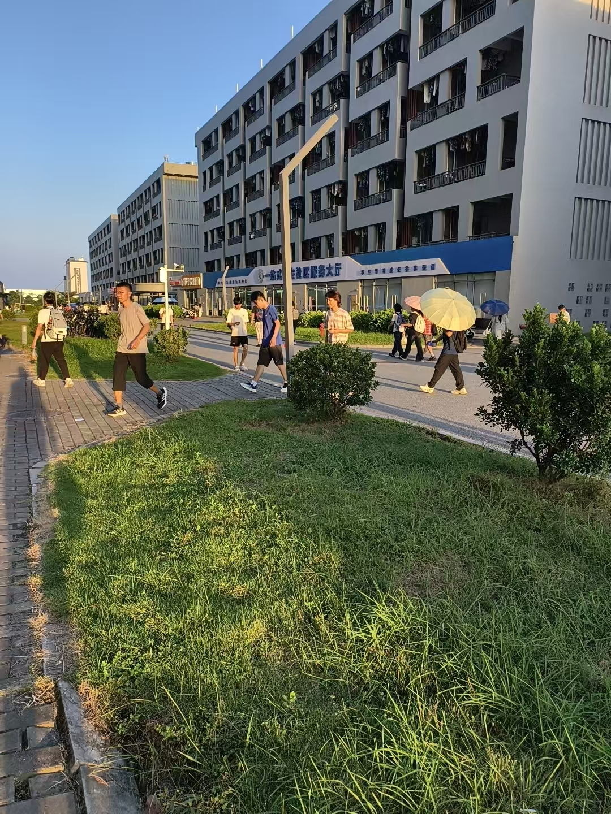
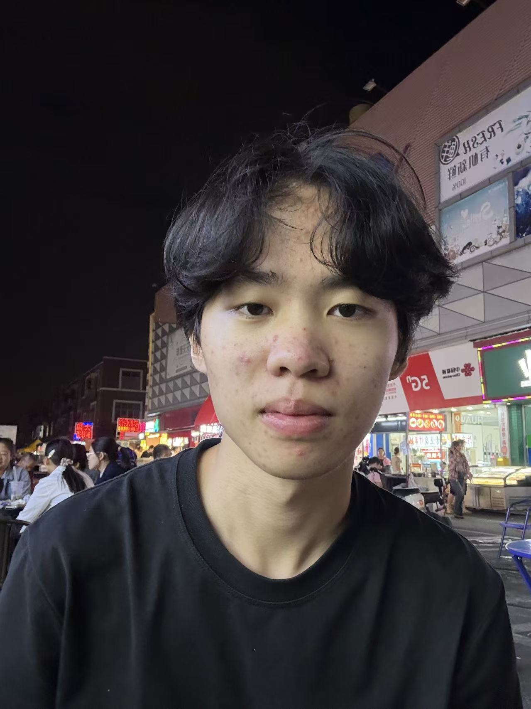
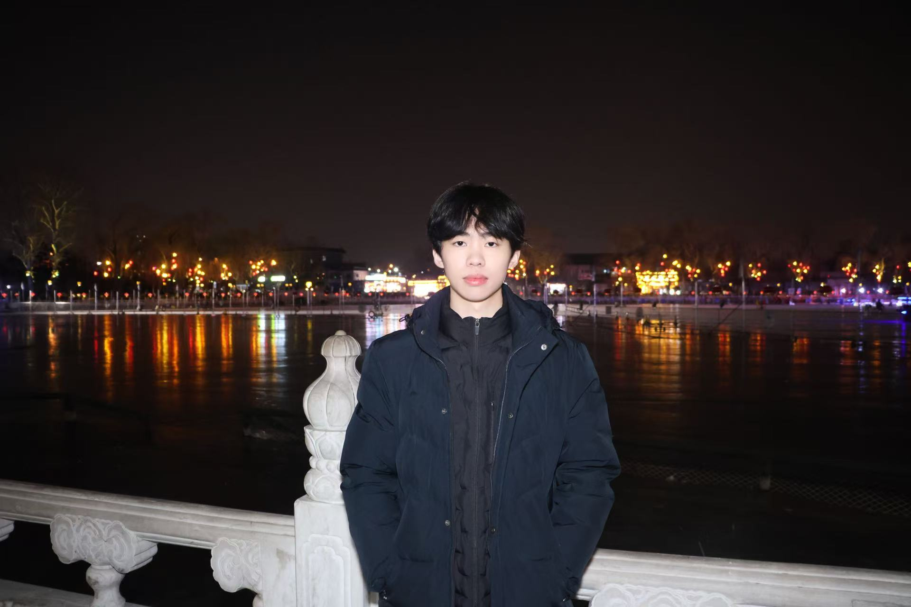
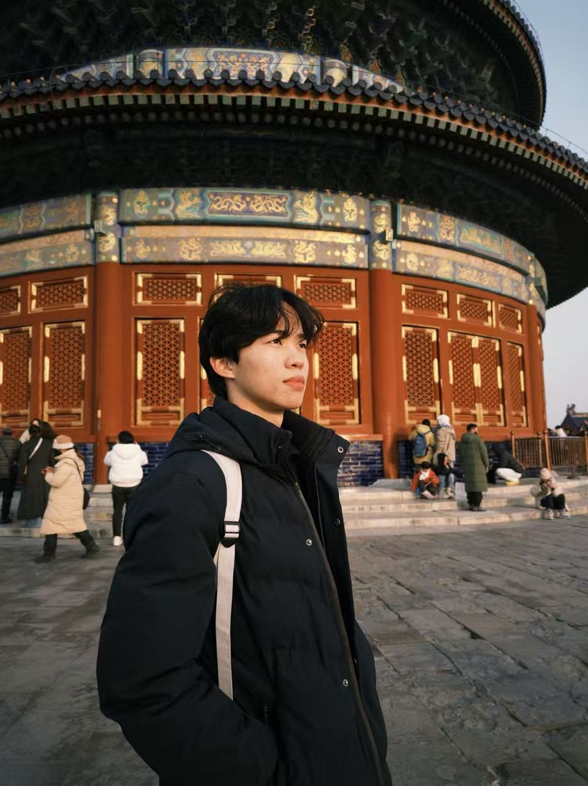
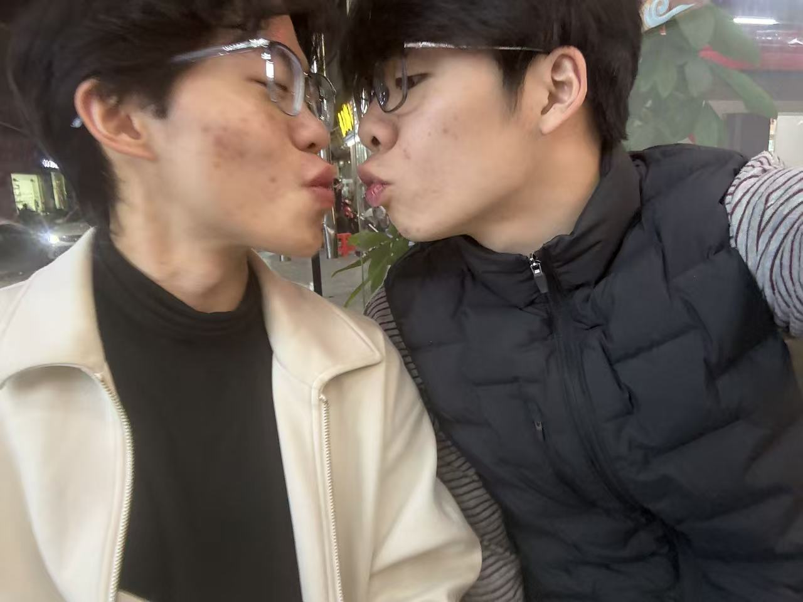

央视网消息：近日，广东石油化工学院校园内，一名男生引发众多同学关注。不少在校师生偶遇后纷纷驻足，其出众气质在校园迅速传开。消息一经传开，校内不少同学慕名打卡，想要一睹风采。究竟是哪位同学收获如此高的关注度，一起来看看。
行走在广油校园我们可以发现大家都很朴素

而人群之中，这位同学格外亮眼。从容的神态自带气场，举止大方得体。一颦一笑之间气质突出，引得不少路人侧目。青春风采尽显，成为校园里一道亮眼的风景线，让人忍不住驻足欣赏。
男人看完他沉默了，女人看完他沉默了，连路灯看完他都羞得灭了三秒。
他不是在长五官，他是在给人类审美定标准。
有位大哥看了他一眼，当场订了去泰国的机票，医生问要整成谁，他掏出这张照片说："就照这个，差一毫米我就投诉你。"
手术做了十八次，花了八十万，出院那天对着镜子笑了三秒，又哭了半小时——因为还差他万分之一的气质。
有人劝他算了，他说不算，他说："你没见过他笑起来的样子，那不叫笑，那叫天灾。"
建议这位小哥出门戴个头套，不然每条街的男生都要抢着替他提包，而他连看都不会看一眼。
这不是颜值，这是天灾级别的人类多样性展示。

他这张脸一出现在联合国大厅，五常代表集体失语，议题当场改成了"如何防止此脸引发第三次世界大战"。表决结果全票通过一项决议：永久禁止此脸公开露面，违者引渡。某国总统投完票就撕了决议，塞进口袋带回国供着。当天全球股票暴跌，因为所有CEO都辞职了。

他眼皮一耷拉，三十七个女生当晚集体在日记里写"我懂你"。他叹一口气，校门口奶茶店排起八十人长队，每人点一杯叫"他的忧伤"。他不想说话，于是全校默认安静模式，连广播站都改放白噪音。女生管这叫"高冷"，男生管这叫"迷人的破碎感"。其实他只是昨晚熬夜打游戏，困得不想张嘴。

祝他早日找到自己的真爱不要再压抑自己了。

🤔 你爱上这位神了没？